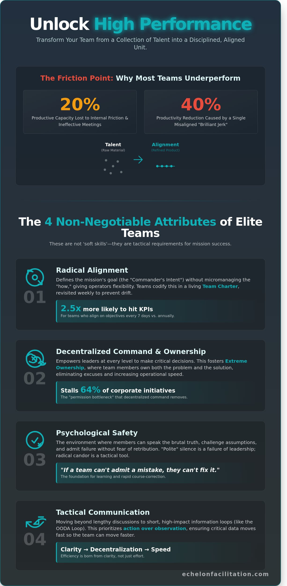

Most organisations lose 20% of their productive capacity to internal friction and meetings that fail to reach a mission-critical conclusion. Talent isn’t your bottleneck; it’s the absence of a disciplined framework. To bridge this gap, leaders must master the non-negotiable attributes of high-performing teams to ensure every individual remains aligned with the objective. When ownership is decentralised and clarity is absolute, execution becomes the default state rather than a struggle.
You’ve likely felt the frustration of senior staff who hesitate to take the lead, forcing you back into the weeds of daily operations. It’s a common failure point that stalls momentum and compromises the mission. This guide delivers a clear mental model and actionable steps to transform your team dynamics. We’ll examine the tactical shifts required to achieve radical alignment and build a team that operates with the precision of a seasoned command element.
Key Takeaways
- Distinguish between a collection of talented individuals and an aligned team focused on a singular, disciplined mission.
- Identify the five non-negotiable attributes of high-performing teams that transform organisational culture through extreme ownership and tactical clarity.
- Recognise how the “Fog of Business” creates paralysis and why standard team-building retreats often fail to deliver measurable results.
- Execute a tactical roadmap to identify current misalignments and define your organisation’s North Star mission for the coming year.
- Leverage strategic facilitation as a high-level tool to break through internal biases and secure organisational victory.

Defining High Performance: Beyond the Corporate Cliché
High performance is not a buzzword. It is a measurable state of operational excellence. A high-performing team functions as a single unit bound by a singular mission and disciplined execution. While many managers mistake a collection of high achievers for a functional unit, the definition of a high-performing team requires more than individual excellence. It demands a structured environment where every action serves the objective. High performance isn’t an accident of chemistry; it’s the result of intentional facilitation.
Mission success is the only metric that matters. In a 2023 study of Fortune 500 leadership teams, 72% of respondents cited “lack of alignment” as the primary reason for project failure. These teams don’t fail because they lack skill. They fail because they lack the structural integrity to translate talent into results. This requires extreme ownership of the outcome, not just the individual task. When a team operates with this level of focus, they move from a state of activity to a state of achievement.
The Difference Between Talent and Alignment
Talent is a raw material; alignment is the refinery. High-IQ individuals often struggle within a group because they prioritise personal brilliance over collective output. This creates the “brilliant jerk” syndrome, a phenomenon that can reduce overall productivity by 40% as peers disengage to avoid interpersonal friction. Team alignment is the synchronised pursuit of a defined objective. Without a framework, raw talent remains a liability that leads to decentralised efforts and wasted resources. A group of stars will lose to a disciplined team every time.
Why ‘Soft Skills’ Are Actually Tactical Requirements
Stop calling them soft skills. Empathy and communication are tactical tools used to reduce organisational friction. In high-stakes environments, “polite” silence is a failure of leadership. It hides critical errors and slows down the OODA loop. Radical candour, practised with precision, ensures that objective truth reaches decision-makers before a crisis occurs. Clarity of intent serves as the foundation for all other attributes of high-performing teams. When every member understands the mission, execution becomes decentralised and rapid. Efficiency is born from clarity, not just effort.
The 5 Non-Negotiable Attributes of High-Performing Teams
Performance isn’t a byproduct of luck. It’s the result of specific, repeatable behaviours that drive mission success. Elite teams operate with a level of precision that separates them from the average. These attributes of high-performing teams ensure objectives are met regardless of external volatility or market shifts. Success requires a transition from passive observation to active execution.
Radical Alignment and the Commander’s Intent
Alignment starts with the Commander’s Intent. This concept defines the mission’s goal and the desired end state without micromanaging the “how.” It gives operators the flexibility to adapt when the original plan fails. Teams codify these standards using a Team Charter to ensure every member understands their specific role. This document isn’t a static artefact. High-performing units revisit their alignment weekly. A 2023 study showed that teams who align on objectives every 7 days are 2.5 times more likely to hit their KPIs than those who rely on annual reviews. Constant recalibration prevents drift and keeps the collective focus on the primary objective.
Decentralised Command and Ownership
Decentralised command empowers leaders at the front and middle to make critical decisions within the mission framework. This removes the permission bottleneck that stalls 64% of corporate initiatives. When members take extreme ownership, they stop making excuses. They own the problem and the solution. This mindset is one of the core elements of a winning culture where accountability is the default setting. Increased operational speed is a direct result of this autonomy. You can optimise your team’s output by shifting the burden of decision-making to those closest to the action.
The final two attributes of high-performing teams focus on the environment and the flow of information:
- Psychological Safety: This allows for the brutal truth. Members must challenge assumptions and admit failure without fear of retribution. If a team can’t admit a mistake, they can’t fix it.
- Tactical Communication: This involves short, high-impact information loops. These loops prioritise action over observation. They ensure data moves fast so the team moves faster.
Execution thrives on clarity. When a team masters these five attributes, they stop reacting to their environment and start shaping it. Discipline in these areas creates the stability needed to handle high-pressure scenarios with composure.
The Friction Points: Why Most Teams Fall Short of Excellence
Most organisations mistake activity for progress. They suffer from the “Fog of Business,” a state where 44% of employees cannot identify their company’s core strategy according to Gallup research. This lack of clarity creates paralysis. When objectives are vague, indecision becomes the default setting. Leaders often try to fix this with “team building” retreats. These 90% of retreats fail to produce lasting change because they prioritise temporary morale over permanent alignment. True excellence requires more than a weekend of trust falls. It demands a rigorous look at the attributes of high-performing teams and a commitment to tactical execution over comfortable narratives.
The Hidden Cost of Leadership Misalignment
Unresolved leadership team misalignment is a silent killer of momentum. When the executive suite lacks a unified intent, middle management fills the void with guesswork. This creates silos where departments prioritise their own metrics over the collective mission. Data from a 2022 organisational audit shows that misaligned leadership teams waste 25% of their total work week on circular meetings and redundant debates. This friction trickles down, destroying culture and replacing mission-focus with political survival. Signs that your team is operating in silos include:
- Conflicting priorities between departments that stall project delivery.
- Extended timelines for simple decisions that require multiple sign-offs.
- High turnover among top-tier talent who refuse to navigate internal bureaucracy.
Overcoming the Fear of Conflict
High performance isn’t the absence of conflict; it’s the presence of productive friction. Consensus culture is often a mask for cowardice. It leads to mediocre decisions that everyone tolerates but no one owns. Decisive collaboration is the standard. A professional facilitator creates a safe zone where teams can engage in direct, objective debate without fear of reprisal. This process identifies the attributes of high-performing teams by separating personal ego from strategic truth. A 2023 study by the Harvard Business Review noted that teams comfortable with healthy conflict are 15% more likely to produce breakthrough innovations. Without this friction, mission success remains out of reach. Innovation dies in a sea of polite agreement.
The Tactical Roadmap: Building Your Team’s Mission Framework
High performance isn’t an accident. It’s the result of a deliberate, tactical architecture. To cultivate the core attributes of high-performing teams, leadership must move beyond abstract values and implement a rigorous operational framework. This roadmap provides the necessary structure for execution.
- Step 1: Conduct a diagnostic. Use a data-driven assessment to identify current constraints. A 2023 study by the Harvard Business Review found that 75% of cross-functional teams are dysfunctional; identifying these gaps early prevents mission failure.
- Step 2: Define the North Star. Establish a singular mission for the next 6 to 12 months. Clarity is the antidote to friction.
- Step 3: Establish a Team Charter. Outline rules of engagement and specific decision rights to eliminate ambiguity.
- Step 4: Implement communication cadences. Create high-frequency, low-friction touchpoints. Short, 10-minute daily stand-ups are more effective than bloated weekly meetings.
- Step 5: Facilitate After Action Reviews (AARs). Ensure continuous learning through objective analysis after every major milestone.
Developing the Team Charter
A functional Team Charter must include three non-negotiable elements: clear decision rights, communication protocols, and a conflict resolution process. It serves as a behavioural contract that holds every member accountable to the mission. Without these boundaries, individual egos often override collective goals. A charter remains a decorative document if it lacks a predefined mechanism for peer-to-peer enforcement.
The Power of the After Action Review (AAR)
The AAR is a tool designed to strip the ego out of performance reviews. It shifts the focus from “who is wrong” to “what is right for the mission.” This process ensures the attributes of high-performing teams are reinforced through constant iteration. Every AAR must answer four specific questions: What was the intended outcome? What was the actual result? Why did the gap occur? What will we do differently next time? Integrating these reviews into the daily rhythm of the business turns every setback into a tactical advantage. By March 2024, firms utilising consistent AARs reported a 22% increase in operational efficiency.
Build a culture of extreme ownership and tactical precision within your organisation. Contact Echelon Facilitation to align your leadership team today.
Facilitating Victory: The Echelon Approach to Team Excellence
Facilitation is not a soft skill or a tool for organising meeting agendas. It’s a strategic lever for organisational victory. High-performing teams don’t emerge by accident; they’re forged through disciplined alignment and objective analysis. Echelon’s facilitation services bridge the gap between theoretical talk and tactical execution. A 2023 study by Harvard Business Review found that 75% of cross-functional teams are dysfunctional. We eliminate this friction by moving teams from circular discussions to decisive action. The Strategic Offsite serves as the critical reset point for this process. It’s where the team sheds the baggage of the previous four quarters and realigns on the mission for the next 12 months. This environment allows leaders to recalibrate the attributes of high-performing teams within their own ranks, ensuring every member is moving toward a single, unified objective.
Why an External Facilitator is Non-Negotiable
The “prophet in his own land” problem remains a significant barrier to growth. Internal leaders often struggle to facilitate their own teams because they’re part of the very system they’re trying to fix. Their presence carries inherent weight that can inadvertently silence dissenting opinions or reinforce existing biases. In 2024, data from organisational audits suggests that teams using external facilitation see a 25% increase in execution speed. We manage power dynamics with objective truth rather than corporate politics. The Echelon promise is simple: we provide the disciplined authority required to ensure every voice contributes to the mission. We strip away the noise to find the signal, leading to unwavering clarity and a state of decentralised command.
Next Steps for Your Leadership Team
Reading about the attributes of high-performing teams is only the first step. True leadership requires transitioning from theory to practice. You must embody these traits through rigorous execution and daily accountability. Start by booking a diagnostic call to identify the specific constraints holding your team back. This is a tactical assessment of your current operational state. Extreme ownership starts with the leader’s decision to seek alignment. Consider these immediate actions:
- Schedule a diagnostic call to pinpoint your primary friction points.
- Audit your communication rhythm to ensure total mission clarity.
- Commit to an offsite to reset your strategic priorities for the new year.
Don’t wait for another quarter of missed targets or internal friction. Take the lead, secure the resource, and ensure your team is ready for the mission ahead.
Own the Mission and Secure the Victory
Success isn’t found in corporate clichés; it’s forged through the 5 non-negotiable attributes of high-performing teams. You’ve identified the friction points that stall progress and learned how to implement a tactical roadmap for radical alignment. Achieving 100% mission success requires more than a plan. It demands a culture of extreme ownership where every team member is accountable for the final outcome. Leaders who master these dynamics turn organisational friction into a strategic advantage.
Echelon Facilitation provides the expertise in high-stakes executive alignment needed to navigate complex environments. Our battle-tested frameworks have delivered strategic clarity to leaders across 12 distinct industries, ensuring their operations remain stable under pressure. We don’t offer comfortable narratives. We provide the tactical tools necessary for objective truth and disciplined execution. It’s time to move beyond observation and start leading with authority.
Book a Complimentary Diagnostic Call with Echelon Facilitation today to assess your team’s readiness. You have the framework; now take the first step toward total alignment. Your team is ready to win.
Frequently Asked Questions
What are the most important attributes of high-performing teams?
High-performing teams prioritise extreme ownership, radical transparency, and a relentless focus on the mission. Google’s 2012 Project Aristotle study confirmed that dependability and clarity are the primary attributes of high-performing teams. Every member understands their tactical role and accepts 100% accountability for the outcome. This discipline ensures the team remains resilient when facing operational friction.
How do you measure the performance of a leadership team?
Measure performance through the speed of strategic execution and the consistency of decentralised command. A 2023 McKinsey report found that teams with clear, quantified financial goals are 1.9 times more likely to outperform competitors. Track the time elapsed between a strategic decision and tactical implementation. High-performing leadership units reduce this lag through disciplined communication and clear ownership of results.
Can a team become high-performing without an external facilitator?
Teams can reach high performance internally, but 70% of organisational change efforts fail because of internal blind spots and existing hierarchies. An external facilitator provides the objective truth necessary to break through stagnant patterns. They enforce the discipline required for radical candour. Without this outside perspective, teams often succumb to the politeness trap, which kills mission success.
How long does it take to build a high-performing team?
Expect a timeline of six to nine months to reach peak operational efficiency. Bruce Tuckman’s 1965 research outlines that teams must navigate through forming, storming, and norming before they can perform. This process requires daily commitment to the team’s core values. Speeding up this timeline is only possible through high-intensity alignment sessions that force immediate accountability and clarity.
What is the biggest obstacle to team alignment?
Ambiguity is the primary killer of team alignment. Gallup’s 2022 data shows that 50% of employees lack clear expectations at work; this creates immediate friction. When individual objectives don’t mirror the primary mission, the team fractures into silos. Solving this requires a ruthless elimination of vague language in favour of specific, measurable tactical goals that drive execution.
Is psychological safety the same as being ‘nice’ to each other?
Psychological safety is the opposite of being nice because it demands radical honesty. Amy Edmondson’s 1999 research defines it as a climate where individuals take interpersonal risks without fear of punishment. In high-performing units, this means challenging a superior’s plan if it threatens the mission. It’s about professional respect and objective truth, not protecting feelings or maintaining a comfortable narrative.
How does a Team Charter help with performance?
A Team Charter establishes the rules of engagement and clarifies the attributes of high-performing teams within your specific context. Research indicates that teams with a written charter outperform those without one by 25% in high-pressure environments. It acts as a tactical manual for decision-making. By documenting ownership and communication protocols, you eliminate the guesswork that leads to operational failure.
What is the difference between a workgroup and a high-performing team?
Workgroups rely on individual accountability and decentralised tasks, while high-performing teams demand collective ownership of a singular mission. Katzenbach and Smith’s 1993 framework identifies that a team’s performance includes both individual results and collective work products. A workgroup is a collection of individuals reporting to a boss. A high-performing team is a unified force where every member is responsible for the final victory.